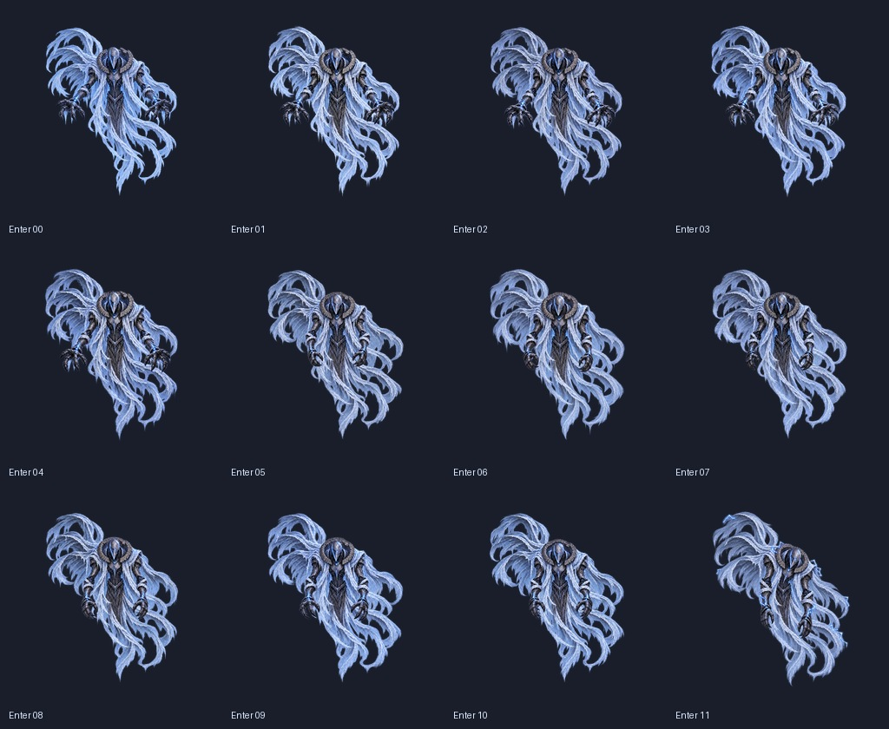
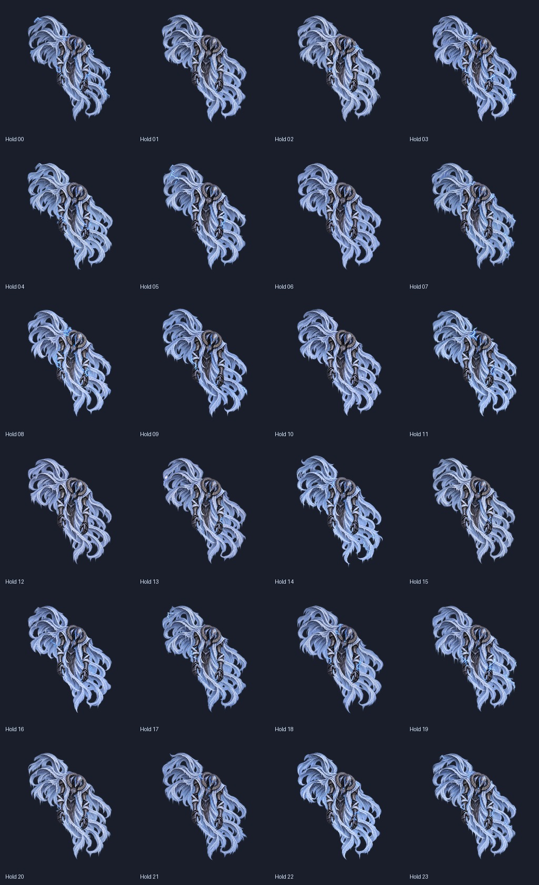
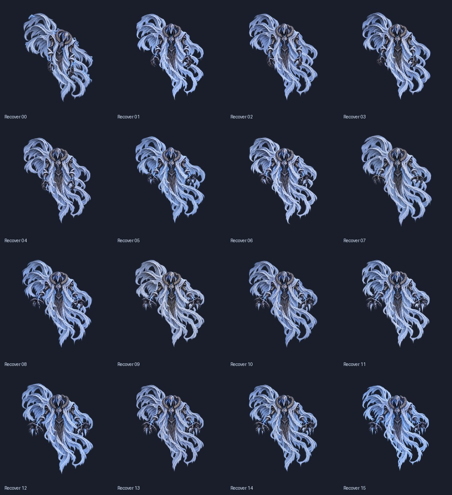

Idle의 회청색 천과 가느다란 서리 결을 기준으로 세 클립을 수정했습니다. Hold의 기울어진 자세와 전기 표현은 유지합니다.
Enter 12장 / 0.6초 · Hold 24장 / 1.5초 반복 · Recover 16장 / 0.8초. 1536px 셀·PPU36·중앙 피벗·비압축.
실제 생성 원본은 1254px입니다. 기존 1254→1024→1536 변환에서 중간 축소를 제거하고 1254→1536으로 한 번만 변환했습니다. 파일 크기 확대 자체가 새 세부 묘사를 만드는 것은 아니며, 천의 세부 묘사는 이미지 편집으로 다시 제작했습니다.
최종 아트 미리보기입니다. Unity 실제 전투 화면 검증과 구분합니다. 픽셀 검사 · Unity 검사 · 프롬프트


